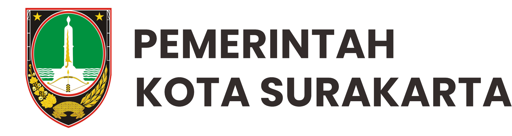

Surakarta Digital Hub Buka Kelas Coding Gratis
Buat anak muda Solo yang mau belajar HTML, CSS, dan IoT. Kuota cuma 50 orang, daftar sekarang sebelum penuh!
Daftar Sekarang →
Kami yakin transformasi digital adalah kunci bagi setiap kota untuk maju dan berdaya saing. Surakarta Digital Hub hadir sebagai wadah pendidikan teknologi yang mencetak talenta lokal berkarakter. Semua demi mewujudkan Solo sebagai kota kreatif, berbudaya, dan siap menghadapi masa depan.
Wisata wajib kalau lu main ke Solo
Istana raja, pusat budaya Jawa. Ada museum, upacara adat, dan arsitektur kuno yang masih terjaga.
Tiket: Rp 10.000 | Buka: 09.00 - 14.00
BudayaSurga batik termurah se-Indonesia. Batik tulis sampe batik cap mulai dari Rp 30.000.
Tiket: Gratis | Buka: 09.00 - 17.00
BelanjaIstana yang lebih estetik, ada pertunjukan tari tiap Rabu & Sabtu. Spot foto terbaik di Solo.
Tiket: Rp 20.000 | Buka: 08.30 - 14.00
SejarahTiap Sabtu malam di Jl. Slamet Riyadi. Ada kuliner, live music, dan lampu-lampu estetik.
Tiket: Gratis | Buka: Sabtu 18.00 - 23.00
Malam HariTaman gratis, ada rusa, danau, dan tempat nongkrong sore paling enak buat keluarga.
Tiket: Gratis | Buka: 07.00 - 18.00
KeluargaPasar tertua di Solo, bangunan peninggalan Belanda. Surganya dawet, lenjongan, dan jajan pasar.
Tiket: Gratis | Buka: 05.00 - 17.00
KulinerWajib coba, jangan pulang sebelum makan ini
Nasi gurih santan, suwiran ayam, telur, dan areh. Legendaris sejak 1950.
Harga: Rp 15.000 - 25.000
Paling LarisSteak ala Jawa, daging, kentang, wortel, kuah manis segar. Beda dari steak biasa.
Harga: Rp 20.000
Wajib CobaSup bening isi sosis solo, telur, ati ampela. Hangat, gurih, cocok buat sarapan.
Harga: Rp 18.000
SarapanSerabi tipis, gurih, pake santan kental. Ada yang original sama coklat.
Harga: Rp 15.000 / pack
Oleh-olehUpdate terbaru dari Surakarta Digital Hub
Buat anak muda Solo yang mau belajar HTML, CSS, dan IoT. Kuota cuma 50 orang, daftar sekarang sebelum penuh!
Daftar Sekarang →Solo resmi masuk jaringan kota kreatif dunia lewat batik dan seni pertunjukan. Bangga jadi wong Solo!
Baca Selengkapnya →Tiap Minggu pagi, jalan utama Solo ditutup buat olahraga, kuliner, dan sepeda. Ada senam bareng jam 06.00.
Lihat Jadwal →Jl. Jend. Sudirman No.2, Surakarta, Jawa Tengah 57111
(0271) 641222
info@surakarta.go.id
Senin - Jumat, 08.00 - 16.00 WIB
Lapor jalan rusak / sampah? Tulis di form sebelah →